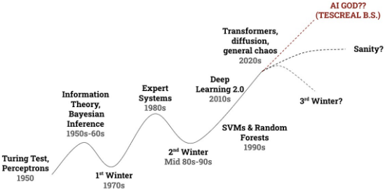
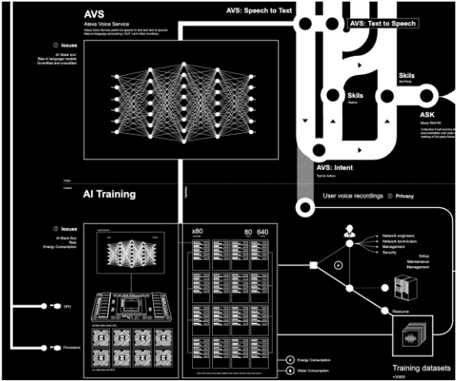
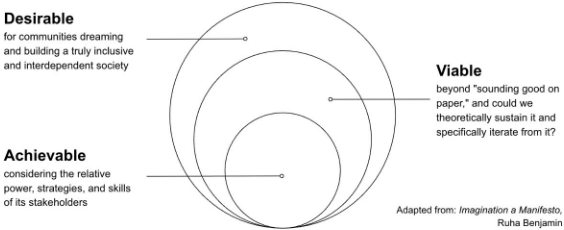

Critical Perspectives on the State of Artificial Intelligence
v1.4 June 2025
https://mwalton.me/ hi@mwalton.me @mwalton.bsky.social https://smith.cam camoverride@proton.me @camoverride
Researched, written and designed with GOFHI (Good Old-Fashioned Human Intelligence)
This work is licensed under the Creative Commons Attribution-NonCommercial-ShareAlike 4.0 International. You are free to copy, print, distribute, transmit, remix, transform & build on this work (or portions of it) under the following conditions: attribution of the authors / artists, not for commercial purposes, indication of what (if any) changes were made and under the same license as the original. These conditions may be waived in some circumstances, just ask!
AI is fucking everywhere: at work, at school, in our homes, in our phones, on our streets, in our governments, and at war. We are living through an era of extreme AI hype. In this climate, some people have gotten rich off of the stolen data and stolen labor that fuels these technologies. Others have been surveilled, oppressed, exploited, and killed. This text presents a short, practical guide to the technologies currently called 'AI,' the ideologies and actors pouring gasoline on the AI dumpsterfire, and what we can do about it.
AI is a bunch of random tools. Some people describe these tools as 'human-like' in order to sell a product
There's no such thing as 'AI' in the way the tech industry promotes it. AI is marketing hype, not 'intelligence.' What people call AI is a messy collection of tools that do stuff: ChatGPT extrudes plausible-sounding text, Midjourney spits out synthetic images, Instagram's algorithm sorts you into demographic categories to annoy you with ads, Amazon's product recommendation system cyberstalks your every click to sell you stuff you don't need. We use scare quotes occasionally to remind you that 'Artificial Intelligence' is marketing hype and science fiction - it does not exist .
Popular chatbot tools like ChatGPT produce seemingly coherent outputs that may sound like they can 'think' 'understand' or 'reason.' They cannot. These models are trained on massive, uncurated datasets of text scraped from the web. All these 'Large Language Models' do is predict the next word in a sequence. That's it. They're indifferent to truth and are better understood as either 'Bullshit Machines' [1] or 'Stochastic Parrots' [2].
Comparing AI tools to human intelligence is anthropomorphization : the attribution of human traits to nonhuman things. People do this all the time and it's usually no big deal: 'my car's name is Betty' , ' my roomba is sad' , 'Siri is being a jerk.' The title of this zine is of course tongue-in-cheek: 'AI' can only 'die' in the same sense that your cellphone 'dies.'
Problems arise when we get tricked into believing AI tools are a good stand-in for human behaviors: AI grifters are financially incentivized to overstate the ability of their tools to be our friends, lovers, therapists or replace us in the workforce. These sci-fi delusions are useful for selling people AI products. Despite the fact that 'AI' doesn't exist, it's ruining everything anyway [3].
AI hype cycles are periods in which attention and capital gets diverted toward whatever random computing tools people are calling 'AI'
The tools and technologies called 'AI' have gone through periods of popularity where they capture the attention of industry, science, and the general public. At other times called 'AI Winters' these tools have lost attention and become ordinary parts of everyday technology. There have been two winters in the past. We're currently living in the third hype cycle.

In some eras AI was largely what we call statistics today. At other times it was sprawling logic rule-sets called 'expert systems.' In others it's been 'neural networks' or 'deep learning.' The technical details of these terms don't matter much for our purposes.
When hype for AI increases, the tools and methods labeled AI get adopted by science, industry, and the military. This leads to a positive feedback cycle: there's more investment, more research, and more products driving further hype. Eventually expectations exceed the ability of these technologies to deliver on their promises and the hype collapses. This leads to broad criticism and disillusionment with the field: an AI winter.
Blinded by the Hype: AI technologies developed during a hype cycle eventually become 'normal.' They're no longer considered AI and fade into the everyday. Nobody is bothered by the fact that their smartphone uses face detection when snapping a picture: this 'AI' tool is old news - the hype for this particular technology is over.
B
Like AI, there are plenty of other tech products that go through hype cycles- and they don't necessarily provide any benefit to humanity.
As we're currently living in the third AI hype cycle, no one truly knows what socially useful technologies will stick around when the hype eventually blows over.
'Workers entered the field around 1950, and even around 1960, with high hopes that are very far from having been realized in 1972. In no part of the field have the discoveries made so far produced the major impact that was then promised.'
- The Lighthill Report [4]
Now that we understand AI products are just hyped up tools, we need to recognize that some tools are ripe for abuse.
The real-life harms caused by AI technologies are well documented. These harms can't be addressed with more or 'better' technology - we need good oldfashioned social progress
The question of whether 'AI' causes harm has already been answered: harms have been documented by scientists, journalists, and scholars the world over. This section is a rapid-fire annotated bibliography of exceptional scholarship and reporting that exposes various kinds of automated violence. We encourage curious readers to follow these references for more detail.
The interdisciplinary authors of 'On the Dangers of Stochastic Parrots: Can Language Models be Too Big? ' [3] accurately predicted many of the environmental 🦜 and social harms arising from the broad adoption of 'stochastic parrots': a pejorative name for the core technology underlying popular chatbots like OpenAI's ChatGPT, Google's Gemini, Meta's Llama and X's Grok. Google tried to suppress the publication of the Stochastic Parrots paper, a clear example of scientific research
Mathematician and Data Scientist Cathy O'Neil illustrated how unregulated algorithmic systems perpetuate and scale discrimination - describing AI based decision systems as 'Weapons of Math Destruction' [6].
The work of Computer Scientists Joy Buolamwini and Timnit Gebru analyzed how and why AI facial recognition systems discriminate based on skin color and gender [7].
Scholar and activist Sasha Costanza-Chock demonstrated how TSA body imaging machines disproportionally flag transgender peoples' bodies for additional screening [8].
Disability Studies and Tech Ethics scholar Ashley Shew has highlighted how AI products reflect an implicitly ableist design philosophy and often treat individual experiences of disability as medical impairments rather than challenges arising from social barriers [9].
A ProPublica investigation [10] demonstrated how algorithms that detect criminal re-offense entrench the classist, racist, and xenophobic foundations of the criminal justice system.
Political Scientist Virgina Eubanks thoroughly documented the many ways in which algorithmic systems 'profile, police and punish the poor' [11].
' Predictive Policing' algorithms, intended to forecast crime (think of the movie Minority Report ) , only serve to increase surveillance and oppression of poor communities [12], are racially biased, and notoriously bad at actually predicting crime [13].
Deepfake tools have been used to generate nonconsensual pornography and revenge porn [14]. Some of the datasets that these AI models are trained off of contain hateful, violent, and abusive content including Child Sexual Abuse Material (CSAM) [15].
The Israeli military is field-testing 'robot dogs' in Gaza and has deployed a targeting system called "Habsora" ('The Gospel') to automate target selection for the IDF [16]. The world over, AI systems deployed by the military industrial complex spy, target, and murder while the corporate developers of these technologies (from Lockheed and Raytheon to Palantir, Anduril, and OpenAI [17, 18] to Amazon [19] and Google [20]) reap massive profits from mass suffering and death.
Automated violence arises from inequalities in who has the power to design and deploy AI systems. The largely homogenous groups of people developing, peddling, and profiting from AI do not care about the human beings their tools harmthey're out to make money.
Data Scientist Catherine D'Ignazio and Digital Humanities scholar Lauren F. Klein calls this inability of AI peddlers to understand or care about the harmful effects of their products ' privilege hazards':
'Those who occupy the most privileged positions among us-people with good educations, respected credentials, and professional accolades-are poorly equipped to recognize instances of oppression in the world'
- Data Feminism [21]
The ways that new technologies affect our lives is determined by who has ownership, agency, and power
When the world is in an AI hype cycle, as it is now, new tools replace older tools because they're faster, cheaper, or simply more hyped up. The owners and creators of these tools get rich in the process, while others lose their jobs. There's nothing new about this process. New tools are developed, jobs change, and the relationship between workers and their work evolves as a result.
What matters now is how society will respond to these technological changes: will power be further concentrated in the hands of the tech elite? Will union efforts suffer? Will workers get screwed?
"The AI can't do your job, but the AI salesman can convince your boss to fire you and replace you with an AI anyway"
- Cory Doctorow
A historical anecdote: New weaving technologies were developed in the United Kingdom during the Industrial Revolution. As these technologies were adopted by factory owners, many workers took issue with the new machines disrupting their jobs. Luddites fought back by destroying these new machines.
While Luddites have been mischaracterized as being against all technology, they were in fact reacting to shitty working conditions where they were likely to be maimed or killed by the machines they worked with. Smashing looms was their tactic, not their goal [22].
' Luddism is about questioning who machinery serves.' - Brian Merchant
Why do these algorithms create such absurd outcomes? [23] AI has politics [24, 25], and those politics are not neutral. Proponents of AI technology claim that with more of your data, AI tools will produce better outcomes. But who owns the data? Who gets to choose what tools get made from it? Who gets money and power when these tools are adopted by society? Who gets to decide what 'better' even means?
Consolidation of wealth and social control in the hands of AI authoritarians are features of these systems, not bugs .
This way of thinking refocuses our attention on the systems these tools are a part of, rather than the tools themselves. Like the Luddites, the problem is not the technology itself, but lack of ownership and control. Who has the power to decide what's designed, how it's built and how it's used?
Tech billionaires are incentivized to support ideologies that emphasize tech's progress instead of social progress, as social progress can threaten their wealth and power
If you're a techie type you've probably seen people start companies, build cool new products and get rich. If you're interested in high technology and enjoy working with these tools, you might be inclined to support the goals of your company and be skeptical of interference and regulation by the government. Libertarian ideologies might be very appealing to you: 'get the government out of my business and let me make the world a better place ' [26]. This belief system follows naturally from technooptimism , the idea that we can create social progress by inventing new technologies that free people from their labors.
' Techno-optimism' is largely repackaged, sci-fi flavored reactionary politics. For instance, venture capitalist Marc Andreessen's 'Techno-Optimist Manifesto' is no more than old-school elitism for a techbro audience. In this unhinged, rambling text he vilifies ethicists, academics, regulators, and conservationists in a section titled 'The Enemy'. We invite the reader to find and read it for themselves - it's wild .
Techno-optimism doesn't offer the world anything more than unregulated capitalism, a worship of the rich, and the vague hope that the products and services they create will eventually, pretty please , solve our social ills, even though there's no evidence that technology alone ever leads to social progress.
Techbro ideologies are zero-commitment and zeroaccountability - thin veils for the worship of their one true god: profit .
Tech leaders credit themselves as revolutionizing and transforming society for the better, that the human race is on the cusp of a utopian age of 'human flourishing' or 'abundance.' If you're a techno-optimist in the 2020s, the most fantastical way to do this is Artificial General Intelligence (AGI).
AGI is the hyped up idea that we're close to creating some kind of super 'AI agent' with human-like abilities across a wide variety of domains. Techno-optimists believe that AGI is good, controllable and imminent: for only $9.99 per month, everyone gets their own digital servant!
Not all discourse around AGI is framed optimistically. 'Doomers' claim the emergence of AGI will destroy humanity. This is termed 'existential risk' or 'x-risk.'
However both AGI-optimist and AGI-doomer ways of thinking serve to perpetuate the AI hype cycle and shift focus away from the real harms of AI towards the fictional: sci-fi Terminator scenarios or benevolent machine gods. Some even mix the two, claiming that AGI is inevitable and beneficial, but anyone who resists it will be retroactively punished by the AGI god ( see you in hell Roko's Basilisk! 🖕 )
We provide a short overview of these wacko ideas so you can better spot them in the wild (and avoid them). This clusterfuck of AGI fantasies have come to be collectively referred to as the 'TESCREAL Bundle' [27].
This acronym, coined by Timnit Gebru and philosopher Émile P. Torres refers to:
It's a mess. The 'rationalists' are not particularly rational, the 'altruists' are not altruistic, the rest blur the lines between pseudoscience and science fiction. What they have been shown to share however, is alignment with and historical roots in eugenics: the same discriminatory attitudes that animated the eugenicists of the 20th century have evolved to impose elitist definitions of 'intelligence', align development of machine intelligence with the interests of the powerful (to the detriment of the marginalized) while evading accountability by framing these activities as 'safety research' and 'serving the future of humanity' [27].
TESCREAL has polluted the discourse on AI ethics, captured the imaginations of regulators of all political shades - notably Chuck Schumer's adoption of their p(doom) concept [28] - and paved the path for the ascendance of what has been called ' The Nerd Reich' [29]: an emerging US techno-political order captured by oligarchs, robber barons, techbros, and fascists.
The last and perhaps the most impotent AI approach is one of liberal passivity: 'How can we harness the 'benefits' of AI while managing the harms?' . Governments and corporations have demonstrated their total unwillingness, incompetence and incapacity to meaningfully commit to accomplishing this goal. Although there's no reason to expect that AGI is inevitable, will take a particular form or is even possible, our regulatory systems have been captured by science fiction inevitability narratives. So what the fuck can we do about it?
We, the human race, need to decide how AI is developed and governed. The idea that certain social outcomes are 'inevitable' is standard conservative bullshit
TESCREAL ideologies popular among Silicon Valley elites have the convenient side effect of side-stepping critiques of capitalism. They either take capitalism as a given or refocus attention elsewhere, failing to challenge for-profit AI.
We should not accept that AI is destined to take a particular form or have a particular effect on society. It's up to us to take back the power to decide how technology is built, adopted and governed.
' There is an inevitability narrative that we hear from tech companies - and that is a bid to take our agency"
-Emily Bender, Computational Linguist Tech Won't Save Us Podcast
A common perception among the public is that the AI technologies Silicon Valley venture capitalists are peddling is the only way forward: we must adopt and accept their products or we'll be left behind and lose our jobs. We must accept the surveillance, theft, and poor working conditions they impose and the death and oppression they causetheir way is the only way .
This is a classic example of capitalist realism , the belief that not only is capitalism inevitable, but any alternative is unimaginable . This narrative is false. We must imagine alternatives. As per Mark Fisher:
Adoption of 'AI' technologies and integration of these tools into our social fabrics serve particular social and political agendas. These agendas are not inevitable, they are imposed.

Move the conversation from Fear of Missing Out to Fuck Around & Find Out
If there's hope for a future in which AI is transformed into a liberatory technology, it cannot be achieved through passive acceptance of whatever snake-oil Silicon Valley is selling: it must be built with care, intention, and be rooted in community [31]. In the meantime, we're faced with the convergence of AI hype and increasingly fascist governments: Elon's disastrously failed 'D.O.G.E.' project as an obvious example.
In this crucial moment, our attitude towards AI should be the same as towards any other oppressive tool owned by the ruling class: skepticism, criticism, obstruction, and resistance. Here's how we do that.
Ask questions : adopt the 'questions first' framework laid out in 'The AI Con' [32]. If you're concerned about the use of an AI system by your government, employer, or another organization, from the beginning insist on asking:
' Solidarity between highly-paid tech workers and their lower-paid counterparts - who vastly outnumber them - is a tech CEO's nightmare.'
-The Exploited Labor Behind Artificial Intelligence [34]
Demand transparency from companies and governments developing AI tools regarding the training data they use, their labor practices, and the environmental impacts of their systems.
Insist on enhanced scrutiny of AI corporate actors, enforcement of existing laws [35], and accountability for the harms and injustices they cause or perpetuate. Assume that these organizations cannot be trusted to self-regulate. They can't.
Disrupt or ignore distracting sci-fi narratives by drawing attention back to real and documented outcomes. Emphasize AI critical discourse focused on labor, surveillance, alienation, medicalization, marginalization, minoritization and the environment. Even if you believe that AGI is possible, do you really want tech oligarchs to have it?
Resist the construction of datacenters in your backyard. AI needs massive computing infrastructure. The data centers used to build and run AI tools require unreasonable amounts of energy and water, their pollution poisons our air, they contaminate our soil, and deplete our shared resources. [36]
Work in solidarity with data workers [37], ghost workers [38], gig workers [39]. Particularly if you work in the tech industry: advocate, educate, unionize, and build collective power [40].
Imagine alternatives to dystopia and the technocapitalist status-quo [41]. Imagination is resistance. Make art, write solarpunk, never stop dreaming of a future where we are all safe and free. Work backwards from these imagined futures, what can we do today to make them achievable?

How long will this go on? When will the hype cycle end? Is another AI winter coming? Faced with an inhumane tech industry and complicit governments it may ultimately fall to the people to invent new ways to evade [42], refuse, resist [43], sabotage [44, 45] or otherwise destroy [46] AI.
[47]